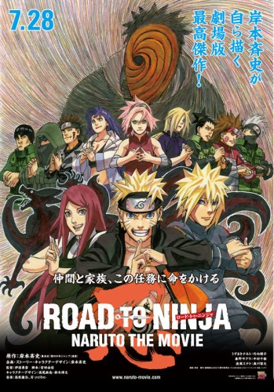
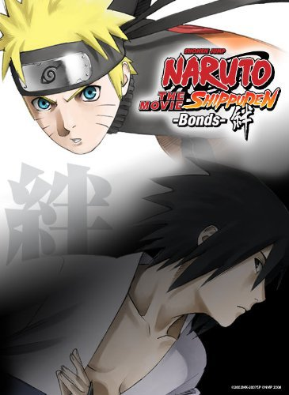

anime
The last: Naruto the Movie
Naruto precisa enfrentar uma nova ameaça enquanto percebe que seus sentimentos por Hinata estão ficando mais fortes. O filme mistura ação, romance e momentos emocionantes.
anime
Naruto precisa enfrentar uma nova ameaça enquanto percebe que seus sentimentos por Hinata estão ficando mais fortes. O filme mistura ação, romance e momentos emocionantes.

anime
Naruto e Sakura são transportados para uma realidade diferente, onde encontram versões alternativas de seus amigos e familiares. É um filme cheio de ação e situações inesperadas.

anime
Naruto e seus amigos precisam proteger a Vila da Folha de um grupo inimigo. O filme tem bastante luta, aventura e mostra a importância da amizade e da união.